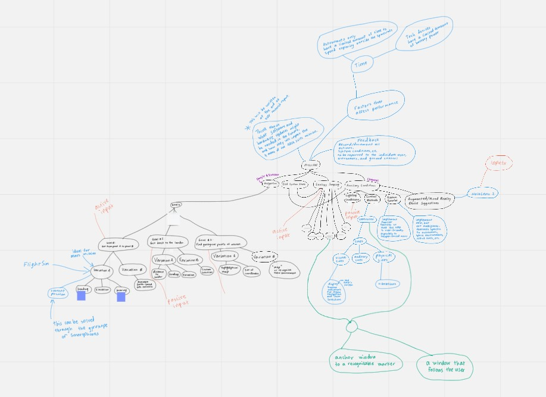

NASA SUITS
(Spacesuit User Interface Technologies for Students)
CHALLENGE
FEBRUARY 2021
PROJECT NAME

POSTER

MIRO DESIGN BOARD

TOOLS
UNITY
MICROSOFT HOLOLENS 2
RASPBERRY PI
NASA OPEN DATA
MIRO
PROJECT DESCRIPTION
As NASA pursues Artemis – landing American astronauts on the Moon by 2024, the agency will accelerate investing in surface architecture and technology development. For exploration, it is essential that crewmembers on extravehicular activities (EVA) are equipped with the appropriate human-autonomy enabling technologies necessary for the elevated demands of lunar surface exploration and extreme terrestrial access. The next-generation lunar spacesuit, the Exploration Extravehicular Activity Mobility Unit (xEMU), defines requirements for a visual display system. In future missions, a dynamic visual display system would optimize the effectiveness of astronaut surface operations. Displays like augmented reality (AR) are a tool to enable interfacing with lunar payloads, support science work, visualize consumables, streamline crew-to-crew communication, bolster Mission Control Center (MCC) interaction methods, and navigate terrain. NASA is exploring AR technology, or virtual user interfaces to adapt to an astronaut’s needs in space, making EVA missions more efficient and effective.
Objectives
Develop a user interface for an HMD in an augmented/mixed reality device which assists astronauts with their responsibilities during a lunar mission by providing instructions and other vital information for EVAs in a non-obstructive way. This may include optional supporting hardware (i.e. hand controls, secondary indicators, an app, virtual reality component, etc.). The test scenario will provide specific environments and resources for interacting with said environments, making it possible to design for certain lunar exploration tasks. These tasks include:
+ Interact with a suit port (i.e. - UIA, DCU, intervehicular spacesuit prep)
+ Display suit vitals in an unobtrusive way
+ Navigate between the lunar lander/moon base, a pressurized rover, and a designated excavation site
+ Complete a rover repair task (i.e.- interact with rover displays, use instructions to inform repair, etc.)
+ Conduct science sampling task at a designated geology site
+ Have a functional HMD to accomodate in areas of high contrast between bright and shadowed regions as is present on the Moon In addition, in the testing environment the astronaut will communicate with a mission control component.